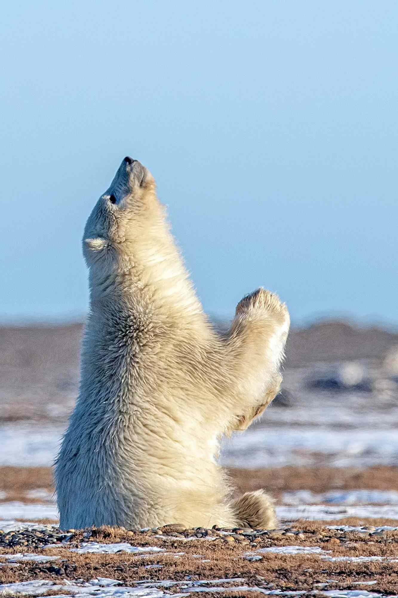

SUJAL SIRIMILLA, DAYOUNG IN, SALINA TANG
The Arctic—the polar bear's most critical habitat—has been frozen for thousands of years.
In the last four decades, we have melted half of it.
Scroll to witness this devastating transformation.
1979
7.1 M km² September minimum extent
Satellite monitoring begins. The Arctic Ocean is locked in thick, multi-year ice connecting Russia, Alaska, Canada, and Greenland in one continuous frozen expanse. The September minimum covers roughly 7.2 million km².
Throughout the 1980s and into the 90s, the sea ice begins to exhibit a slow but noticeable decline. Thick, multi-year ice that historically survived the summer melt starts to break apart, leaving the Arctic slightly more vulnerable.
As the new millennium begins, the downward trend becomes impossible to ignore. The edges of the ice pack retreat further from the coastlines of Eurasia and North America, opening up seasonal waters that were once frozen solid year-round.
A massive drop shocks the scientific community. The extent drops to 4.3 million km². Wide expanses of open ocean appear off the coasts of Siberia and Alaska, opening shipping routes that were once permanently frozen.
A devastating season. Ice plummets to just 3.4 million km² — the lowest ever recorded in human history. The Northwest Passage opens to unescorted shipping for the first time. Arctic amplification is now undeniable.
The situation improves slightly from 2012, but it is still dire. The ice extent remained consistently low throughout the decade, failing to recover to pre-2007 levels. 3.9 million km² is now the expected baseline. The ice that remains is dangerously thin and seasonal.
The Arctic sea ice isn't just frozen water.
For the polar bear, it is a hunting platform and a home. As warming accelerates, sea
ice melts earlier in spring and forms later in the fall.
This shorter window reduces the
time polar bears have to hunt seals, their primary food source. When the ice retreats
far offshore during summer and early autumn, bears are stranded on land
—forced to wait weeks or months for it to return. Staying on the coast leads
to several disadvantages for the polar bears: loss of body weight and energy reserves
due to lack of nutritious food, reduced reproductive rates, and lower survival rates
for cubs.
Over time, longer periods spent onshore can contribute to declining health and
population challenges for polar bear populations. Read more about these situations
below.
Researchers tracked polar bears in Hudson Bay and found that longer ice-free seasons force bears to spend more time on land, leading to weight loss and declining health.
Read Article →Researchers found that shrinking Arctic sea ice is causing more polar bears to come ashore and remain there for longer periods.
Read Article →Earlier ice breakup and later freeze-up force bears to spend longer periods fasting on land.
Read Article →Explains why sea ice is essential for seal hunting and why terrestrial food sources cannot replace it.
Read Article →Overview of the threats posed by sea-ice loss, including reduced hunting opportunities and population decline.
Read Article →Scientists found that food available on land cannot replace the calories obtained from seals, making it difficult for polar bears to maintain body weight during longer ice-free periods.
Read Article →The loss of sea ice isn't just a symptom of climate change—it's a powerful catalyst. As the reflective white ice disappears, the dark ocean absorbs more solar radiation, causing the Arctic to heat up nearly four times faster than the rest of the planet.
The map below illustrates this extreme warming anomaly, comparing the current and future predicted decades against the historical baseline (1951–1980). The intense bright colors highlight areas experiencing rapid heating.
Each point shows Arctic temperature by year, predicted under SSP8.5
Off the northeastern coast of Russia, Wrangel Island holds a unique place in the Arctic. A UNESCO World Heritage Site since 2004, it hosts the highest density of polar bear maternity dens in the world — earning it the nickname "the polar bear nursery." Each autumn, pregnant females come ashore to dig dens in the island's snow-covered hills, giving birth to cubs through the long Arctic winter. The island's isolated coastline and rich marine ecosystem have made it a critical refuge for polar bears. However, as climate change is causing sea ice to retreat earlier each year, that refuge is threatened.
The summer months of July, August, and September are critical for polar bear survival because they coincide with the annual sea-ice minimum. As Arctic sea ice retreats during this period, many polar bears are forced ashore and use Wrangel Island as a temporary refuge. They may spend weeks or even months waiting for sea ice to return.
Rising temperatures are shortening the duration of stable sea ice and delaying its return in autumn. As polar bears are forced to remain on land, they have limited access to more nutritious food sources and are displaced from their natural habitats, threatening their survival as a species.
Our climate projections suggest that under a high-emissions scenario, conditions could worsen dramatically by the late twenty-first century. By around 2080, prolonged ice-free seasons may leave Wrangel Island and other Arctic coastlines unable to support large numbers of polar bears, threatening the long-term viability of many polar bear populations across the Arctic.
The polar bear's story is urgent — but it is not unique. Across every ecosystem on Earth, species are being pushed past the boundaries of what they evolved to survive. Songbirds navigating by stars toward nesting grounds that no longer exist. Sea turtles laying eggs on beaches swallowed by rising tides. Monarch butterflies completing a migration their offspring will have no habitat to finish. The theme is the same everywhere: temperatures rising faster than life can adapt.
The common thread is us—specifically, the emissions we choose to produce. Every degree of warming we avoid is habitat preserved, a season extended, a population that doesn't cross the threshold into decline. The data throughout this project makes clear that the difference between a difficult future and a catastrophic one is still within our control.
Transportation, diet, and home energy are the three largest sources of individual emissions. Make small changes towards reducing your own emissions, and these consistent steps compound throughout decades.
Individual action matters, but systemic change — in energy, industry, and land use — requires policy. The elections that feel local often determine the most.
Climate silence is one of the biggest barriers to action. Most people know of global warming, but few know the actual consequences. Sharing what you've learned — even in small conversations — shifts what feels normal and urgent.

Over the past four decades, we have watched half of the Arctic's summer sea ice disappear—not in a single disaster, but in the slow, compounding arithmetic of warmer seasons and shorter winters. Under the high-emissions scenario, temperatures continue their steady climb into levels polar bears cannot survive— within the next 50 years.
But this trajectory is not fixed. Every fraction of warming avoided translates directly into sea ice preserved, hunting seasons extended, and populations that do not cross the threshold into collapse. Our visualization succeeds because it makes the loss geographic and visible — you don't just read that half the ice is gone, you watch it disappear. The choices we make will determine whether this environment stabilizes or continues its freefall. No single year, record minimum, or isolated event decides that. WE do.
The Arctic is the Earth's early warning. Reduce your emissions. Treat this not as someone else's problem, but as a defining challenge of the world we are living in today.